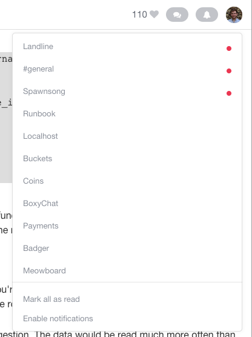

This guide assumes that you've already created an account on landline.io —. It might also be helpful to take a look at the quick start.
Now that you've got Landline set up in an <iframe> on your site, you might be wondering how to extend the built-in notifications for your users. Maybe you want to provide them something like this:

To get started, you'll need to authenticate with Landline using the single sign-on flow. Assuming that you SSO set up on your server and included <script src="https://cdnjs.cloudflare.com/ajax/libs/socket.io/1.3.5/socket.io.min.js"></script> (which exposes the io global) somewhere on your page:
// This code is just a simple example; it's not quite
// production-level code, nor is it meant to be. The methods we're
// demonstrating, in order of execution:
// - logInToLandline()
// - getInitialRooms(token)
// - setUpSocket(token)
function logInToLandline() {
$.ajax({
url: `https://landline.io/sessions/new?team=${your_team_name}`
success: function(result) {
// Tokens expire in three days; should be plenty of time
// for your user's session.
var expiration = result.expiration;
var token = result.token;
getInitialRooms(token);
setUpSocket(token);
},
error: function(err) {
console.log(err);
}
});
}
function getInitialRooms(token) {
$.ajax({
url: 'https://landline.io/rooms',
method: 'GET',
headers: {
Authorization: 'Bearer ' + token,
'Content-Type': 'application/json',
},
dataType: 'json',
success: function(result) {
// A successful request will yield a JSON object
// with `memberships` (a list of IDs of rooms to which the
// user is subscribed), `rooms` (a list of your team's room
// objects), and `unread_rooms` (a list of IDs of rooms in
// which the user has unread messages) fields. Do with these
// what you need to do.
var memberships = result.memberships;
var rooms = result.rooms;
var unreadRooms = result.unread_rooms;
handleInitialRooms(memberships, rooms, unreadRooms);
},
error: function(jqXhr, textStatus) {
console.log(textStatus);
}
});
}
function setUpSocket(token) {
var socket = io('https://landline.io');
// the connection will be confirmed asynchronously
socket.on('connect', function() {
// you'll need to emit an `'auth'` event with the token
// you received in the response to the first request
socket.emit('auth', token, function(response) {
if (response.success) {
// Landline emits both the message and the room's
// name when a message is created
this.socket.on('message', function(message, roomName) {
// use the `created_at` field on the message so that // you can dismiss notifications based on the time
// that they were checked
var createdAt = message.created_at;
// you'd implement this function yourself, depending
// on how you handle unreads
markRoomAsUnread(roomName, createdAt);
});
} else {
// figure out why the response failed and fix it --
// is your token expired?
console.log(response);
}
});
});
}
And it's as easy as that.